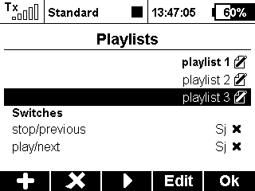
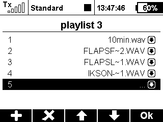

With this application multiple playlists can be created.
The main page contains a list of all existing playlists and the selection for play and stop switches.
Navigate through the active playlist with the play and stop switches.
 
create a playlist and give it a name
press F(4) to edit the focused playlist
add, delete and swap files
the active playlist can be chosen with the F(3) button
there are two switches which control the replay of the selected playlist
if the end of the playlist is reached, the playback jumps back to the first file in the list